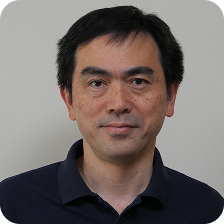
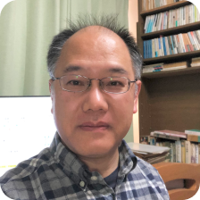
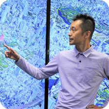
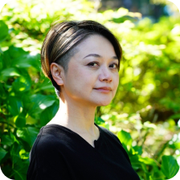
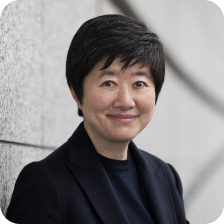
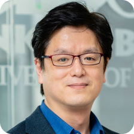

東大Week@Marunouchi 2025
Program
7月30日は3名の登壇者によるクロストークを開催、7月31日は３会場に分かれて単独の登壇者による講演を行います。
お申し込みはイベント管理サービスの「Peatix（要事前登録）」からお願いいたします。
※開催日毎に実施時間等が異なります。ご注意ください。
※「申し込む」ボタンをクリックするとPeatixの申し込みページに遷移いたします。
3×3 Lab Future
大手門タワー・ENEOSビル
最先端の技術研究に関する社会実装と課題〜量子コンピュータとフュージョンエネルギー〜
今後社会に大きなインパクトを与えることが予想される量子コンピュータ、フュージョンエネルギーの両分野において、最先端の研究を進める東京大学教授をお招きし、最先端の技術研究の現在地を提示するとともに、技術の社会実装の可能性とその課題を探り、今後のビジネス創造における示唆を示します。
クロストーク
瀧口 友里奈
経済キャスター/
東京大学 工学部
アドバイザリー・ボード
メンバー

古澤 明
東京大学 大学院
工学系研究科物理工学専攻
教授

江尻 晶
東京大学 大学院
新領域創成科学研究科
教授
ネットワーキング（懇親会）
DAY2は3会場同時開催
7月31日は3会場同時開催となります。ご希望の会場を選んでお申込みください。各会場の講演は2部構成となります。
※講演毎のお申込みやネットワーキング（懇親会）のみのお申込みはできません。
※全会場同時間帯の開催となるため、複数会場の申込みはできません。ご希望の会場を1つお選びいただき、1部・2部+ネットワーキング（懇親会）を通して
ご参加をお願いいたします。
DMO Tokyo Marunouchi
デジタルアーカイブと宇宙物理学から学ぶ「過去と未来」
ビッグバンからはじまる宇宙に生命はなぜ生まれたのか。戦争や災害の過去の記憶はどうすれば未来に活かせるのか。全く異なる視点から「過去と未来」の本質に迫ります。
戦災・災害のデジタルアーカイブ
広島・長崎原爆、東日本大震災、能登半島地震、さらにウクライナ侵攻・ガザ危機など、戦災・災害の貴重な記憶を未来に継承する 「デジタルアーカイブ」のデザイン手法、及び地域の人々が主体的にアーカイブを育んでいくためのコミュニティ形成のありかたについて、実演を交えて解説します。

渡邉 英徳
東京大学 大学院
情報学環・学際情報学府
教授
宇宙になぜ、生命があるのか
地球の歴史上、最初の生命が一体どのように誕生したのかという「生命の起源」問題は、自然科学における最大の謎とも言えます。この講演ではまず、ビッグバンから始まり、銀河が生まれ、恒星が生まれ、惑星が生まれることを現代科学はどこまで理解できたかをお話し、その上で、では原始生命はどのように生まれたのかという謎について、天文学の観点から考察してみたいと思います。
戸谷 友則
東京大学 大学院
理学系研究科 天文学専攻
教授
ネットワーキング（懇親会）
コンファレンススクエアM+ サクセス
脳科学とジェンダー論からみる、多様性の実現と課題
多様性をどう受けとめ、社会にどう活かしていくか—。脳科学とジェンダー論という異なる視点から、日常に潜む思い込みや決めつけに気づき、誰もが自分らしく生きることのできる社会のヒントを探ります。
脳と心の多様性と社会：脳科学から考える社会のあり方
人間の脳は、どれも同じような形をしているけれど、それぞれ違うしそこから生じる知覚や心も違う。音も光も食べ物も、実はみんなが同じように知覚しているわけではない。人間を性別で二等分するのも解像度が低すぎる。脳と心の多様性はどのように可視化できるのだろうか？社会は誰に合わせて設計されるべきなのだろうか？多様な人を包括できる社会は設計可能なのだろうか？具体例とともに、社会のあり方について議論したいと思います。

四本 裕子
東京大学 大学院
総合文化研究科
教授
「笑って考える仕事のこと、家庭のこと～男の家事でジャンボ宝くじを必ず当てる方法？！～」
ジェンダーへの誤った理解は、職場や家庭での誤解やトラブルを招くことも。本講義では、無意識の思い込みが私たちの行動や判断に与える影響を見つめ直し、より良い人間関係を築くための視点を学びます。育児経験もある瀬地山教授の実体験や身近な例を通してジェンダーを正しく理解し、日常の言動を見直すきっかけとしましょう。
瀬地山 角
東京大学 大学院
総合文化研究科
教授
ネットワーキング（懇親会）
Inspired. Lab
倫理とテクノロジーの交差点から考える、未来社会のかたち
AIに宿る文化的価値観と、食のあり方を変える培養肉技術。異なる分野から技術革新の最前線と文化的・倫理的なインパクトに焦点を当て、私たちはそれらとどのように向き合うべきかを考えます。
AIの中のお国柄：ローカライズの次にくるもの
ChatGPTやDeepSeekなどの生成系AIを物知り博士や相談に乗ってくれる有能なアシスタントのように使っている人が多いようです。客観的で公正な立場で普遍的な考え方を答えてくれていると思っている節があります。しかし、これらの生成系AIには文化的な価値観が埋め込まれています。世界には多様な価値観がある中で、AI技術を用いた新しいサービスを提供する際に、私たちはローカル文化とどう向き合うべきなのでしょうか。

板津 木綿子
東京大学 大学院
情報学環・学際情報学府
教授
培養肉研究の最前線
狩猟から畜産へ変化してきたように、今、食肉を得る新たな選択肢として「培養肉」が注目されています。培養肉とは、動物の個体からではなく、細胞を体外で組織培養することによって得られた肉のことで、家畜を肥育するのと比べて地球環境への負荷が低いことや、畜産のように広い土地を必要とせず、厳密な衛生管理が可能などの利点があるため、従来の食肉に替わるものとして期待されています。本講演では、培養肉の意義や重要性、関連する最先端の技術などに関して議論していきたいと思います。

竹内 昌治
東京大学 大学院
情報理工学系研究科
教授
ネットワーキング（懇親会）
7.30[Wed] 18:30~19:30
会場：3×3 Lab Future
瀧口 友里奈
経済キャスター／
東京大学 工学部
アドバイザリー・ボード メンバー
SBI新生銀行社外取締役。テレビ東京「ニュースモーニングサテライト」や日経CNBCのキャスターを務める。“情報の力で社会のイノベーションを加速する”株式会社グローブエイトを設立し、新メディア「アカデミアクロス」を立ち上げアカデミアと社会を繋いでいる。書籍「東大教授が語り合う１０の未来予測」編著。世界経済フォーラムYGLに日本人キャスターとして史上初選出。
7.30[Wed] 18:30~19:30
会場：3×3 Lab Future
古澤 明
東京大学 大学院
工学系研究科物理工学専攻
教授
東京大学工学部物理工学科卒業、同大学院工学系研究科物理工学専攻修士課程修了後、日本光学工業株式会社(現株式会社ニコン)入社、2000年より東京大学工学系研究科物理工学専攻助教授(のち准教授)、2007年より工学系研究科物理工学専攻教授。専門分野は量子テレポーテーションと量子コンピューター。2016年秋の紫綬褒章受章。令和 3(2021)年 4月理化学研究所 量子コンピュータ研究センター・副センター長 /光量子計算チーム・チームリーダー就任（兼務）。2024年OptQC株式会社の創業者の1人となり取締役に就任。
7.30[Wed] 18:30~19:30
会場：3×3 Lab Future
江尻 晶
東京大学 大学院
新領域創成科学研究科 教授
1965年東京都生まれ。1992年東京大学大学院理学系研究科博士課程単位取得退学、博士（理学）、核融合科学研究所助教、東京大学理学系研究科助教を経て、現在、東京大学大学院新領域創成科学研究科複雑理工学専攻教授。主に、プラズマ計測手法、球状トカマクプラズマの研究に従事。
7.31[Thu] 18:30-19:10
会場：コンファレンススクエアM+ サクセス
四本 裕子
東京大学 大学院
総合文化研究科 教授
東京大学卒業後、米国ブランダイス大学大学院でPh.D.を取得。ボストン大学およびハーバード大学医学部リサーチフェロー、慶應義塾大学特任准教授、東京大学准教授を経て現職。専門は認知神経科学、知覚心理学。視覚、聴覚、触覚などの脳内情報処理の機序、日常生活での知覚経験の個人差を研究対象としている。
7.31[Thu] 19:20-20:00
会場：コンファレンススクエアM+ サクセス
瀬地山 角
東京大学 大学院
総合文化研究科 教授
東京大学教養学部を卒業後、東京大学大学院総合文化研究科博士課程修了・学術博士。北海道大学文学部助手を経て、1994年東京大学助教授、2009年より現職。10年間2人の子供の保育園の送迎を一手に担い、今でも毎日の夕食作りを担当するジェンダー論の研究者。NPO法人の理事として保育所の運営にも参加。抱腹絶倒の講演で日本全国を行脚中。
7.31[Thu] 18:30-19:10
会場：DMO Tokyo Marunouchi
渡邉 英徳
東京大学 大学院
情報学環・学際情報学府 教授
1974年生。博士（工学）。専門は情報デザイン、デジタルアーカイブ。「ヒロシマ・アーカイブ」や「ウクライナ衛星画像マップ」など、記憶の継承をテーマにしたデジタルアーカイブを多数制作。著書に「データを紡いで社会につなぐ」「AIとカラー化した写真でよみがえる戦前・戦争」他。日本賞、グッドデザイン賞、日本新聞協会賞など受賞多数。
7.31[Thu] 19:20-20:00
会場：DMO Tokyo Marunouchi
戸谷 友則
東京大学 大学院
理学系研究科
天文学専攻 教授
天文学者、宇宙物理学者として宇宙の成り立ちや起源、進化を研究している。専門は超新星やガンマ線バーストなどの宇宙の爆発現象や、銀河の形成進化、ビッグバン宇宙論など。最近は生命の起源についても関心を持って研究している。理論研究が主だが、すばる望遠鏡など、最新の天文観測データを駆使した研究も行っている。
7.31[Thu] 18:30-19:10
会場：Inspired. Lab
板津 木綿子
東京大学 大学院
情報学環・学際情報学府 教授
津田塾大学英文学科卒業後、フルブライト奨学生として南カリフォルニア大学大学院歴史学科博士課程修了。Ph.D.（歴史学）。東京大学教養学部特任講師、総合文化研究科准教授を経て、2021年より現職。『AIから読み解く社会：権力化する最新技術』（東京大学出版会 2023）共編者。2024年W20ジャパンデリゲート。専門は、文化史・社会史。
7.31[Thu] 19:20-20:00
会場：Inspired. Lab
竹内 昌治
東京大学 大学院
情報理工学系研究科
教授
2000年東京大学大学院工学系研究科博士課程修了。2001年東京大学生産技術研究所講師、2003年同助教授、2014年同教授、2019年同大学大学院情報理工学系研究科知能機械情報学専攻教授、現在に至る。専門はバイオハイブリッドデバイス、ナノバイオテクノロジー、マイクロ流体デバイス、MEMS、ボトムアップ組織工学。